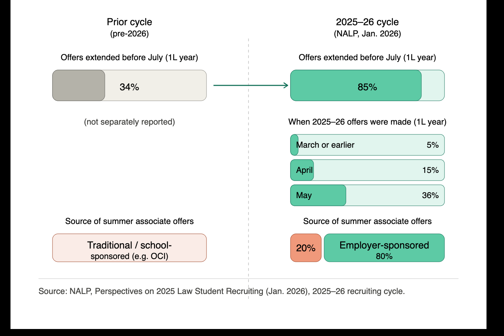

The Resolution and Report, in full
Complete text as submitted July 17, 2026. Accelerated law-firm recruiting and the first year of legal education.
Resolution
RESOLVED, That the American Bar Association urges law schools, private legal employers, bar associations, and other stakeholders in the legal community to study the impact of accelerating law firm recruitment timelines on the quality of legal education, the well-being of law students, and the long-term health of the entry-level legal hiring market; and
FURTHER RESOLVED, That the American Bar Association urges law schools, private legal employers, bar associations, and other stakeholders in the legal community to consider, in their respective recruitment practices and policies, the educational, professional, and equitable interests of law students, including their need for adequate time to develop the analytical, ethical, and professional competencies that the first year of legal education is designed to foster.
The General Information Form is available from the sponsors on request; a link to the filed resolution will be added once it is assigned a House of Delegates number.
Report
The recruitment of law students for post-graduate employment has long been an integral part of the law school experience. For decades, that process unfolded along a relatively stable timeline anchored by the on-campus interview (OCI), traditionally held in late summer between a student's first and second year. That predictability allowed law students to focus on the foundational academic and professional development that the first year of legal education is uniquely designed to provide. Since 2024, however, the timeline for recruiting law students into the largest sectors of private legal practice has accelerated dramatically. This Resolution responds to that acceleration by urging law schools, private legal employers, bar associations, and the broader legal community to study its impact and to consider, in their recruitment practices, the educational and professional interests of law students.
I. The Acceleration of Law Firm Recruiting
The acceleration of law firm recruitment is well documented. The National Association for Law Placement's (NALP) Perspectives on 2025 Law Student Recruiting, released in January 2026, tracked industry-wide data for the 2025-26 recruiting cycle.1 These findings report that the majority of offers for second-year summer positions were extended before June of students' first year of law school, and 85% of such offers were extended before July—a remarkable single-year jump from the 34% of offers made before July in the prior cycle.2 The same study found that 5% of all summer associate offers were made in March of students' first year or earlier, 15% in April, and 36% in May.3 During the 2025 recruiting cycle for 2026 summer programs, 80% of offers resulted from employer-sponsored recruiting, while only 20% came through traditional law-school-sponsored methods such as on-campus interviewing.4 These trends in private legal hiring practices are visualized below:

For the first time, NALP also tracked “jumbo offers”—offers extended simultaneously to a student for both first-year and second-year summer positions. Ten percent of offices with first-year summer programs reported making at least one such offer, and 87% of those offices included a bonus or financial incentive tied to the second-year portion.6 The offer rate to first-year summer associates, meaning the share invited to return for a second-year summer position, reached an all-time high of 94.2%, though the acceptance rate for those return offers declined to 72.3%. Separately, the offer acceptance rate for post-graduation associate positions following the second-year summer program exceeded 89% for the fourth consecutive year, reaching 89.4% in 2025.7
These shifts have not gone unnoticed by the organizations closest to the data.
“It should give us pause that, in a period already defined by significant institutional change and disruption, one of the forces exerting the most pressure on the structure of the first-year curriculum is not pedagogical reform or accreditation standards, but employer recruiting activity.”8 Nikia Gray, Executive Director, National Association for Law Placement (NALP), January 2026
A joint report by the Law School Admission Council (LSAC) and NALP, released in June 2026, was the first of its kind to focus specifically on how accelerated recruiting affects the first-year experience.9 The report found that 88% of first-year students surveyed in October 2025 were aware of Big Law recruitment timelines for second-year summer positions, but only 25% had been aware of those timelines before starting law school.10 Higher pre-matriculation awareness was concentrated among men, continuing-generation college graduates, and students at the most selective law schools—a distribution that underscores how unevenly information about this recruiting environment is distributed among entering students.11 More than half of the Class of 2028 students polled by LSAC and NALP reported that the accelerated recruitment practices negatively impacted them.12
II. Concerns Across the Legal Community
The acceleration of recruiting timelines has prompted concern from across the legal community—from law school deans and career services professionals, to legal employers, to law students themselves. The concerns broadly fall into four categories.
First, the integrity of the first-year curriculum. The first year of law school is the foundation of the legal industry. It is where the practitioners of tomorrow build foundational analytical, ethical, and professional competencies that carry significance throughout a lawyer's career.13 When private sector recruitment activities begin in the first semester of the students' first year—and in some cases during the first few weeks—students must make professionally consequential choices before they have had the opportunity to develop the very competencies that should inform those decisions. As Lois Casaleggi, Associate Dean for Career Services at the University of Chicago Law School, has observed: “The academic disruption this is causing is not sustainable . . . . We should be letting first-year law students get their feet under them—by learning how to read cases, take cold calls, and study for exams. We need law students to become law students first.”14 Professor Jamie Abrams has similarly observed that the current environment “harms legal education pedagogy, creates a logistics nightmare for students and educators, [and] imposes psychological harms on students.”15
Second, the well-being of law students. Law school is a high-pressure environment, in which students from many backgrounds and circumstances face personal and professional challenges in addition to the academic rigor of their degree programs. A substantial body of research documents elevated rates of anxiety and depression among law students. Industry analyses of the 2025-26 recruiting cycle have linked the accelerated timeline directly to a negative mental-health impact on students, and one legal-recruiting industry analysis reported that 75% of surveyed students attributed increased anxiety specifically to recruiting pressures.16 One 1L respondent to the LSAC-NALP study described the experience this way: “It's been extremely stressful knowing that we should start applying to Big Law jobs when we started law school just two months ago. I prioritize my schoolwork, but I'm afraid of passing on an opportunity. It's been extremely overwhelming for my mental health, and I feel like I'm drowning most of the time.”17 That this pressure now begins in students' first semester, before they have completed any law school examinations and while they are still adjusting to the rigors of legal education, is a meaningful change from prior generations of law students.
In addition to these health impacts, accelerated recruitment undermines student opportunity. When recruitment for both summers occurs before students have the chance to meaningfully take elective coursework or experiential credits, students close the door on building summer experience in different areas of the law, client bases, or workplace styles and locations. This is particularly acute for students seeking to understand the public sector, which largely hires on a later timeframe than private employers. Post-graduation public sector placements decreased 14% from 2024-2025, and post-graduation federal clerkships similarly decreased 11% over the same range.18 Because the 2025 graduating class was roughly 7% smaller than the prior year, part of this decline reflects a smaller pool of graduates rather than recruiting timing alone; the accelerated private-sector calendar nonetheless makes it harder for students to preserve options in public-service sectors, which typically hire later.19
Moreover, accelerated recruitment limits student capacity to engage early on with school opportunities including law reviews and journals, experiential and pro bono work, and student organizations. These are deeply important aspects of the law school experience where students refine their goals—or even redefine them—and build personal and professional networks while developing community on campus.
Third, equity and access. Accelerated recruiting timelines privilege law students with pre-existing connections and familiarity with the legal industry. The LSAC-NALP study found that pre-matriculation awareness of Big Law recruitment timelines was concentrated among continuing-generation college graduates and students at the most selective schools, while first-generation college graduates, Pell Grant recipients, and part-time students reported significantly lower pre-matriculation awareness.20 Students who enter law school already familiar with the Big Law recruiting process (typically through family or other networks) are better positioned to navigate compressed timelines, develop application materials quickly, and convert early interest into early offers. As legal-education scholars have observed, “super early recruiting, in addition to disrupting first year academics for all students who participate, also surely exacerbates disadvantage and privileges advantage in ways that make the game harder than it needs to be for all sorts of students, including many first-generation law students.”21
At the institutional level, the accelerated recruitment timelines favor prestigious schools. Commentators have argued that the traditional private employment model's reliance on “pedigree and grades” does not reliably correspond to candidates' success at a firm.22 Accelerated recruitment only exacerbates this existing problem as hiring closes even sooner, long before law students have the opportunity to exhibit their talent during or beyond the full 1L curriculum. This most significantly affects schools that are not in the upper tier of law schools, depriving both students and employers of opportunity.
Fourth, the health of the legal hiring market. Concerns about the consequences of accelerated recruiting are not limited to students and law schools. Legal employers, too, face the prospect of making hiring decisions based on increasingly limited information about candidates' academic performance, professional development, and demonstrated interest in particular practice areas. The accelerated timeline limits employers' ability to assess student applicants based on their 1L summer performance, or those who demonstrate notable excellence in 2L opportunities such as field-specific electives and experiential work like clinics or field placements. Industry commentators have described the resulting dynamic as a “lose-lose-lose situation” in which students, firms, and schools all bear costs that none individually has the incentive or capacity to address.23 Marcie Davis, Assistant Dean of Career Services at SMU Dedman School of Law, has described the current environment as “a feeding frenzy that no one seems to know how to stop” in which “firms feel intense pressure to secure talent quickly, and students (and schools) feel pressure to participate lest they be left behind.”24
III. The Coalition of Law Student Governments
These concerns are not abstract. Throughout the 2025-2026 academic year, the law students most directly affected have consistently raised the matter in detailed and documented forms. On January 1, 2026, student governments at eighteen American law schools—Columbia, Cornell, Duke, Georgetown, Harvard, Northwestern, New York University, Penn, Stanford, the University of California Berkeley, the University of California Los Angeles, the University of Chicago, the University of Michigan, the University of Texas at Austin, the University of Virginia, Vanderbilt, Washington University in St. Louis, and Yale—submitted a joint letter to the Council of the ABA Section of Legal Education and Admissions to the Bar requesting review of how accelerating recruitment timelines impact law schools and students.25 The Coalition Letter detailed four categories of concern: the undermined first-year educational quality; the premature narrowing of career choice; the disparate impact on students without pre-existing access to legal-industry networks; and the structural effects on law school staff and employer recruiting teams. Several signatory schools accompanied the Letter with student body polls demonstrating their constituencies' supermajority support for the Letter's request.26
The Coalition Letter received significant attention across legal media.27 Following the Letter, the signatory student governments engaged in a series of conversations with ABA leadership, including with members of the Council of the Section of Legal Education and Admissions to the Bar and with the Office of the President. From this dialogue, the coalition was encouraged to pursue a resolution before the House of Delegates as the appropriate vehicle for the ABA to take a position on this issue. The coalition reached out to the Bar Association of the District of Columbia, which ultimately decided to sponsor the resolution. In reaching that decision, the Bar Association of the District of Columbia consulted its Young Lawyers Section, which recommended that the Bar Association sponsor the resolution in the ABA House of Delegates. This Resolution is the product of significant dialogue. It is brought in the spirit of constructive and collaborative engagement rather than blame, and it reflects the proposition (affirmed by the data above) that the time has come for the legal community to study and consider the consequences of the current accelerated recruiting environment.
IV. The Appropriate Role of the American Bar Association
The ABA is the most appropriate entity to address the industry-wide issues raised by accelerated recruitment timelines. As the national voice of the legal profession, the Association can convene law schools, legal employers, bar associations, and other stakeholders in a coordinated examination of the costs and consequences of the current recruiting environment in a way that no other institution can. The Association's existing relationships with the federally recognized law school accreditor, ABA entities such as the Law Student Division, the Young Lawyers Division, and the Section of Antitrust Law, and state and local bar associations make it the natural forum for the cross-stakeholder dialogue that this issue requires.
This Resolution is intentionally framed in general terms. It does not direct any particular reform; it does not endorse any particular timeline or mechanism; and it does not assign blame for the current state of affairs. Rather, it urges those most directly affected to study the impact of accelerating recruitment timelines and to consider, in their own practices, the educational, professional, and equitable interests of law students. That framing reflects two judgments. First, the issue is sufficiently complex, and the relevant data sufficiently new. Thus, the Association is better served by encouraging study and consideration of the issue, before prescribing a specific course of action once the full picture is known. Second, the breadth of stakeholders affected—law schools, legal employers, bar associations, career-services professionals, and law students themselves—means that any durable solution will need to emerge from collaboration rather than from a single directive. By adopting this Resolution, the Association affirms that the issue of accelerated private sector summer recruitment warrants attention from the entire legal community, and it equips its own entities, officers, and members to participate in that conversation in an informed and coordinated way.
V. Conclusion
The acceleration of law firm recruitment timelines is reshaping the law student experience in negative ways that warrant the careful attention of the entire legal community. The data, the testimony of law school deans and career services professionals, the analyses of legal employers, and the voices of the law students who are most directly affected all point in the same direction: the current environment is not sustainable, and its consequences extend well beyond the students who have struggled to navigate it. This Resolution urges the legal community to study those consequences and to consider, in its own practices and policies, the educational and professional interests of law students. The American Bar Association should adopt the Resolution and, in doing so, take its proper place in a conversation the legal community has already begun.
Respectfully submitted,
Craig E. Leen, President
Bar Association of the District of Columbia
August 2026
Relevant existing ABA policy
The resolution builds on, and does not disturb, existing policy: 23A523 (urging legal employers to evaluate law students holistically and consider more than grades and class rank) and 24A515 (promoting pay transparency during the on-campus interview process).
The coalition of law schools
On January 1, 2026, student governments at eighteen law schools submitted a joint letter requesting review of accelerating recruitment timelines. Several signatories accompanied the letter with student polls showing supermajority support.
- Columbia Law School Student Senate
- Cornell Law Students' Association
- Duke Bar Association
- Georgetown Student Bar Association
- Harvard Law Student Government
- NYU Student Bar Association
- Northwestern Pritzker Student Bar Association
- Penn Carey Council of Student Representatives
- Stanford Law Association
- Student Association at Berkeley Law
- UCLA Law Student Bar Association
- University of Chicago student body
- University of Michigan Law School Student Senate
- University of Texas at Austin Student Bar Association
- University of Virginia Student Bar Association
- Vanderbilt Bar Association
- WashU Law Student Bar Association
- Yale Graduate and Professional Student Senate
Endnotes
- James Leipold, NALP: Accelerating Recruiting Trends Amidst Market Slowdown, Law School Admission Council (Jan. 29, 2026). lsac.org ↑
- Id. ↑
- Nikia Gray & Danielle A. Taylor, Law Student Recruiting Moves Earlier as Employer-Sponsored Hiring Expands, New Report Finds, NALP (Jan. 26, 2026). nalp.org (PDF) ↑
- Id. ↑
- Id. All data in this graphic is based on the NALP Perspectives on 2025 Law Student Recruiting report. ↑
- National Jurist Editors, NALP Report: Law Student Recruiting Moves Earlier as Employer-Sponsored Hiring Dominates, The National Jurist (Jan. 30, 2026). nationaljurist.com ↑
- Gray & Taylor, supra note 3. ↑
- Emma Cueto, Law Student Recruiting Moves Further Off Campus, Law360 (Jan. 26, 2026). law360.com ↑
- Elizabeth Bodamer & Danielle A. Taylor, 2025 1L Class: Student Awareness and Impact of Accelerated Big Law Recruitment, Special Knowledge Report at 3, LSAC & NALP (June 2026). lsac.org ↑
- Id. ↑
- Id. ↑
- Christine Charnosky, More Than Half of 1Ls Say Early Recruiting Has Had a Negative Impact, New Survey Reveals, Law.com (June 11, 2026). law.com ↑
- See ABA Standards and Rules of Procedure for Approval of Law Schools (2025-2026) at 21–24. Standards 301-303 concern the objectives, learning outcomes, and curriculum of accredited law school education. ↑
- David Lat, Big Law's Accelerated Recruiting Is a Lose-Lose-Lose Situation, Bloomberg Law (Dec. 11, 2025) (quoting Lois Casaleggi, Associate Dean for Career Services, University of Chicago Law School). bloomberglaw.com ↑
- Jamie Abrams, How Early BigLaw Recruiting Undermines Legal Education, The National Jurist (Jan. 14, 2026). nationaljurist.com ↑
- Harrison Barnes, BigLaw Recruiting and Associate Attrition Statistics, BCG Attorney Search (Feb. 2026). bcgsearch.com ↑
- Elizabeth Bodamer & Danielle Taylor, LSAC and NALP Spotlight the Ripple Effects of Accelerated Recruiting Timelines, LSAC (June 11, 2026). lsac.org ↑
- ABA Journal, Fewer law school grads head to government, public interest or clerkship jobs (May 14, 2026). abajournal.com ↑
- Id. (noting the 2025 graduating class was approximately 7% smaller than the prior year). ↑
- Bodamer & Taylor, supra note 9. ↑
- Leipold, supra note 1. ↑
- Jack Crittenden, How elitism is killing us: Law firm elitism, The National Jurist (Sept. 12, 2023). nationaljurist.com ↑
- Lat, supra note 14. ↑
- Eric Killelea, Big Law's Pushy Recruiting Pressures First-Semester Students, Bloomberg Law (Nov. 25, 2025). bloomberglaw.com ↑
- Letter from Coalition of 18 Law School Student Associations and Governments to Daniel R. Thies, Chair, Council of the ABA Section of Legal Education and Admissions to the Bar (Jan. 1, 2026) [hereinafter “Coalition Letter”]. ↑
- See Coalition Letter. Yale Law School (98% support of 147 respondents), University of Virginia School of Law (94% of 488), Duke University School of Law (93% of 237), and University of Chicago Law School (78% of 148). ↑
- Henry Liu, Law Students Lament Early Job Recruitment in Letter to Bar Association, Yale Daily News (Jan. 20, 2026). yaledailynews.com; Isabelle Kravis, Wake Up Call: Law Students Decry Early Recruitment in ABA Letter, Bloomberg Law (Jan. 21, 2026). bloomberglaw.com ↑